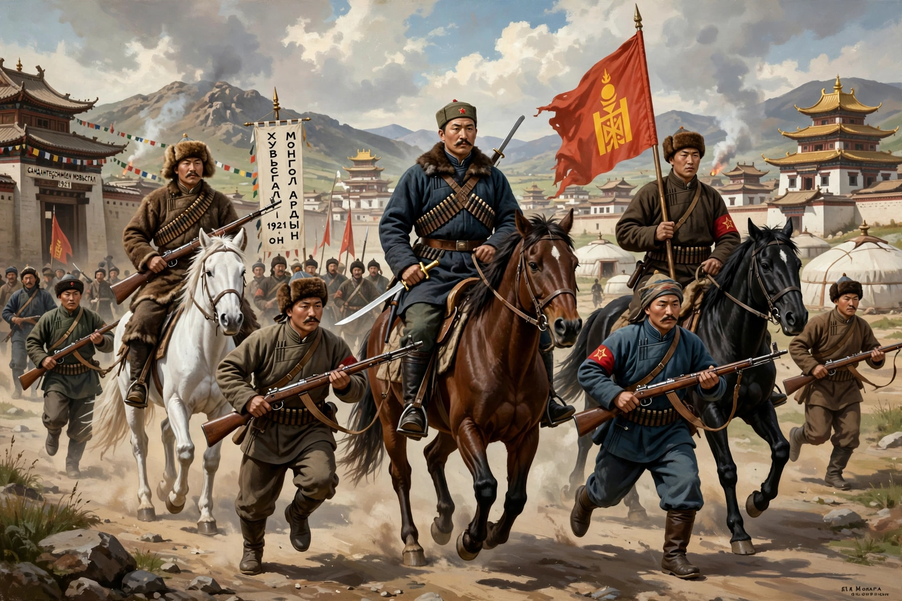

The Mongolian Revolution of 1921 (the People's Revolution) was a military and political upheaval in which Mongolian revolutionaries, aided by the Soviet Red Army, expelled Chinese forces and the White Russian forces of Roman von Ungern-Sternberg from Outer Mongolia, ending Chinese occupation that had begun in 1919.
The Mongolian People's Party, led by figures including Damdin Sükhbaatar and Khorloogiin Choibalsan, formed a provisional government; joint forces took Urga (now Ulaanbaatar) in July 1921. Bogd Khan was restored as a limited monarch until his death in 1924, when the Mongolian People's Republic was proclaimed — the world's second communist state — profoundly reshaping Buddhism in Mongolia and Mongolian society.